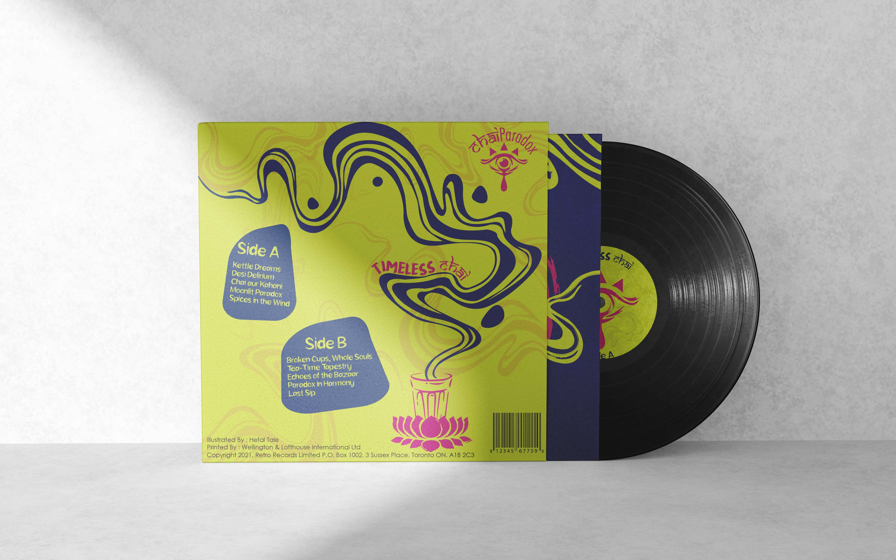
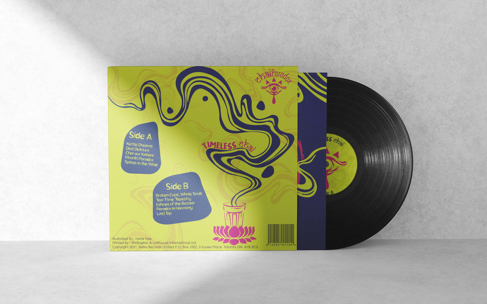

Chai Paradox is a fictional band concept I created to explore brand identity design in the music space. Launched around their debut album Timeless Chai, the project blends the soul of Indian musical traditions with global contemporary sounds. The identity reflects the band’s essence, where sitars meet synths, and heritage meets rebellion, just like a cup of chai: comforting yet complex. For this project, I designed the logo, merchandise mockups, and a custom vinyl cover to visually capture the paradoxical spirit of the band.

 
